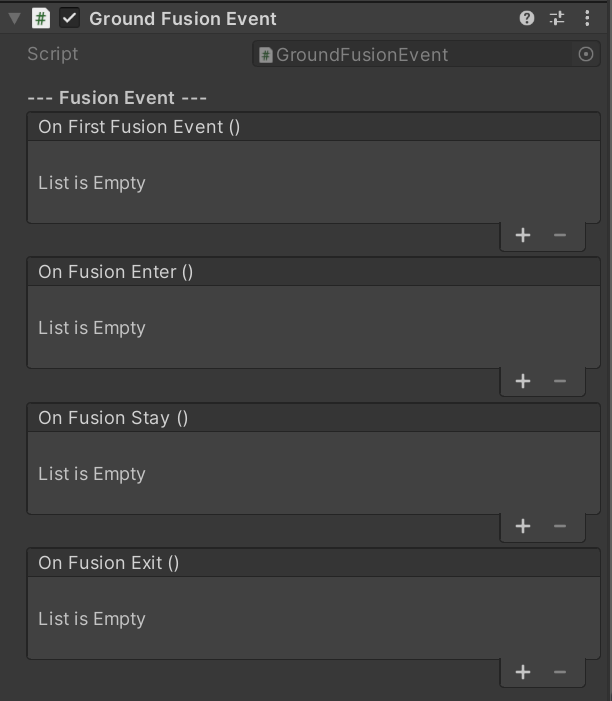

Ground Fusion Event
描述
Ground Fusion Event组件的功能与Tracking Event组件类似。但是因为Ground Plane组件比较特殊，他的主要功能是校准场景的 原点位置，所以识别事件不能通过是否识别到来判断，而是要通过场景原点是否被校准来判断，而Ground Fusion Event则用于判断此 事件。
Note
此组件只能配合GroundPlane使用，在Tag Tracking组件上不会生效
事件 |
描述 |
|---|---|
On First Fusion Event |
场景第一次被校准时上报，程序运行过程中只上报一次 |
On Fusion Enter |
从未跟踪切换为跟踪到时上报 |
On Fusion Stay |
进入跟踪后逐帧检测，有跟踪数据更新时持续上报 |
On Fusion Exit |
进入跟踪后逐帧检测，数据丢失时上报 |
使用方法
在具有TagGroundPlane组件的GameObject上选择Add Component搜索Ground Fusion Event并添加
按照标准Unity事件使用方法，选择脚本执行对象，以及加载对应脚本
Note
如果希望调整事件触发的灵敏度，比如希望非常靠近Beacon才触发，可以设置Ground Plane组件的Max distance值。